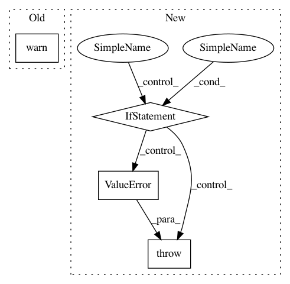

5f287d9215a8a62c93abb87f578ab9bdc6c63b0e,chainercv/transforms/image/rotate.py,,rotate,#Any#Any#Any#Any#Any#,68
Before Change
if _cv2_available:
return _rotate_cv2(img, angle, expand, fill, interpolation)
else:
warnings.warn(
"Although `chainer.config.cv_rotate_backend == "cv2"`, "
"cv2 is not found. As a fallback option, rotate uses "
"PIL. Either install cv2 or set "
"`chainer.global_config.cv_rotate_backend = "PIL"` to "
"suppress this warning.")
return _rotate_pil(img, angle, expand, fill, interpolation)
elif chainer.config.cv_rotate_backend == "PIL":
return _rotate_pil(img, angle, expand, fill, interpolation)
else:
After Change
else:
return _rotate_pil(img, angle, expand, fill, interpolation)
elif chainer.config.cv_rotate_backend == "cv2":
if not _cv2_available:
raise ValueError("cv2 is not installed even though "
"chainer.config.cv_rotate_backend == \"cv2\"")
return _rotate_cv2(img, angle, expand, fill, interpolation)
elif chainer.config.cv_rotate_backend == "PIL":
return _rotate_pil(img, angle, expand, fill, interpolation)
else:
In pattern: SUPERPATTERN
Frequency: 3
Non-data size: 4
Instances
Project Name: chainer/chainercv
Commit Name: 5f287d9215a8a62c93abb87f578ab9bdc6c63b0e
Time: 2019-04-19
Author: yuyuniitani@gmail.com
File Name: chainercv/transforms/image/rotate.py
Class Name:
Method Name: rotate
Project Name: keras-team/keras
Commit Name: e74a37438b5389ae19eb61b431859f9789100874
Time: 2017-05-22
Author: ajoseph.lobo@gmail.com
File Name: keras/backend/tensorflow_backend.py
Class Name:
Method Name: function
Project Name: chainer/chainercv
Commit Name: 5f287d9215a8a62c93abb87f578ab9bdc6c63b0e
Time: 2019-04-19
Author: yuyuniitani@gmail.com
File Name: chainercv/utils/image/read_image.py
Class Name:
Method Name: read_image